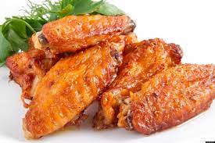

Chicken wings
Chicken Wings

Decription
These Korean-style air-fried wings are crispy, sticky and spicy. Cooked in an air fryer they are ready in less than 30 minutes. They are perfect as an appetizer or add some rice and veggies on the side and you have a balanced meal.
Ingredients
- Sauce
- 1/4 cup hot honey
- 3 tablesspoots gochujang
- 1 tablespoon brown sugar
- 1 teaspoon lemon juice
- 2 teaspoons minced garlic
- 1 teaspoon minced fresh ginger
- 1/2 teaspoon salt
- 1/4 teaspoon black pepper
- 1/4 cup finely chopped green onions
- Chicken Wings
- 2 pounds chicken wings
- 1 teaspoon salt
- 1 teaspoon garlic powder
- 1 teaspoon onion powder
- 1/2 teaspoon black pepper
- 1/2 cup cornstarch
- Garnish
- 2 tablespoons chopped green onions
- 1 teaspoon seasame seeds
Back